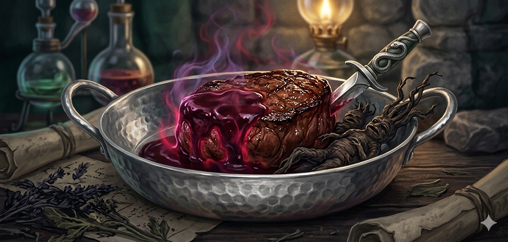

Filet ao Sangue de Dragão
A Essência do Prato
Esta iguaria não é apenas sustento, é uma poção de vigor. O corte é selado em temperaturas extremas para aprisionar a magia do sabor no centro da peça.

Ingredientes Raros
- • 500g de Filet Mignon selecionado
- • 200ml de Redução de Vinho do Porto
- • 1 pitada de Pó de Chifre de Bicórnio
- • Raiz de Mandrágora defumada
Modo de Preparo
1. Aqueça o caldeirão de prata até que o metal brilhe azul.
2. Sele a carne por 3 minutos de cada lado em silêncio absoluto.
3. Regue com a redução enquanto entoa o feitiço de selagem.